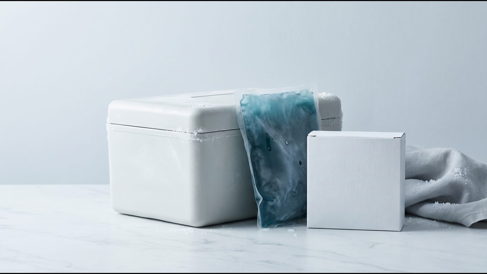

Ozempic® (семаглутид): терапия под наблюдением эндокринолога
Ozempic® (семаглутид) — агонист рецептора GLP-1 для подкожного введения раз в неделю. Назначает врач после консультации.

Формат терапии
Ручка Ozempic® или программа с сопровождением?
Оригинальный семаглутид Novo Nordisk. Формат подбирается врачом в зависимости от ваших целей и опыта самостоятельных инъекций.
| Критерий | Ручка Ozempic® | Программа с сопровождением |
|---|---|---|
| Формат | Оригинальная ручка-инъектор Novo Nordisk | Индивидуальный курс под наблюдением специалиста |
| Удобство | Самостоятельное еженедельное введение дома | Контроль дозы, титрование и поддержка |
| Дозировка | Постепенное титрование: 0,25 → 0,5 → 1 мг | Подбор дозы по показаниям и переносимости |
| Стоимость | 9 200 ₴ (ручка 1 мг) | По прайсу клиники |
Перед стартом — обязательная консультация врача. Полный прайс
Что такое Ozempic®
Оземпик (Ozempic®) — рецептурный препарат компании Novo Nordisk с действующим веществом семаглутид. Семаглутид — агонист рецептора GLP-1: он имитирует природный гормон, влияющий на аппетит и уровень сахара в крови. Препарат вводят подкожно раз в неделю, а назначает его врач после консультации.
Оземпик в Украине зарегистрирован (РП UA/19176/01/01) и отпускается по рецепту. Показание в украинской инструкции, дословно: «Лікарський засіб Оземпік® застосовувати при недостатньо контрольованому цукровому діабеті 2 типу як доповнення до дієти та фізичних вправ:
- як монотерапію, коли метформін вважається недоцільним препаратом через непереносимість або протипоказання;
- як доповнення до інших лікарських засобів для лікування цукрового діабету (…)».
В переводе: при недостаточно контролируемом сахарном диабете 2 типа в дополнение к диете и физическим упражнениям — в монотерапии, если метформин считается нецелесообразным из-за непереносимости или противопоказаний, или в дополнение к другим лекарственным средствам для лечения сахарного диабета. Снижения массы тела среди показаний нет: инструкция упоминает его среди результатов исследований и побочных реакций. Поэтому запрос «оземпик для похудения» не совпадает с официальным показанием, и уместен ли препарат в вашем случае, решает врач.
Что входит в программу
- бесплатная онлайн-консультация эндокринолога, оценка показаний и противопоказаний, анализы при необходимости;
- подбор дозы врачом и её коррекция во время лечения;
- сопровождение: специалист на связи 24/7, регулярный мониторинг веса и самочувствия;
- доставка по Украине в термобоксе с аккумулятором холода, до двери или в отделение Новой почты.
Как действует семаглутид
Семаглутид на 94% совпадает по строению с человеческим гормоном GLP-1 и действует через те же рецепторы в поджелудочной железе и мозге. Когда уровень глюкозы повышен, семаглутид стимулирует выработку инсулина и подавляет глюкагон. Период полувыведения около недели.
По украинской инструкции, семаглутид снижает аппетит, ослабляет тягу к перекусам и к жирной еде; в исследовании с тремя свободными приёмами пищи потребление калорий было на 18–35% ниже, чем на плацебо. Он также немного замедляет опорожнение желудка.
Вес на дозах Ozempic® описывает сама инструкция: в SUSTAIN 6 за 104 недели люди с диабетом 2 типа потеряли в среднем 3,6 кг на 0,5 мг и 4,9 кг на 1 мг (на плацебо 0,7 и 0,5 кг). Цифра STEP 1 (NEJM, 2021), −14,9% массы за 68 недель, получена на семаглутиде 2,4 мг (доза Wegovy®), а инструкция Ozempic® не рекомендует больше 1 мг в неделю. Подробнее — в статье о семаглутиде.
Кому лечение не подходит
Противопоказание в украинской инструкции Ozempic® одно: повышенная чувствительность к семаглутиду или другим компонентам препарата. Американская инструкция (FDA) добавляет медуллярный рак щитовидной железы у вас или в семье и синдром множественной эндокринной неоплазии 2 типа (MEN 2). Основание: у грызунов семаглутид вызывал опухоли C-клеток щитовидной железы; значимость этого для людей, по украинской инструкции, низкая, но не исключена.
По инструкции врач отдельно оценивает:
- сахарный диабет 1 типа и диабетический кетоацидоз: семаглутид при них не применяют, он не заменяет инсулин;
- сердечная недостаточность IV класса (NYHA): не рекомендовано;
- панкреатит в анамнезе: нужна осторожность; при подозрении на панкреатит лечение прекращают, при подтверждённом не возобновляют;
- диабетическая ретинопатия: возможно временное ухудшение;
- инсулин или сульфонилмочевина: растёт риск гипогликемии;
- терминальная стадия болезни почек: не рекомендовано;
- беременность и кормление грудью: семаглутид не применяют, а при планировании беременности отменяют минимум за 2 месяца;
- возраст до 18 лет: безопасность и эффективность не установлены.
Как проходит лечение
- Консультация. Эндокринолог собирает анамнез и список ваших лекарств, при необходимости назначает анализы.
- Назначение. Врач решает, подходит ли вам семаглутид. По украинской инструкции начинают с начальной дозы и повышают её не раньше чем через 4 недели.
- Инъекции. Подкожно в живот, бедро или плечо; для каждой инъекции новая игла.
- Первые месяцы. Реакции со стороны пищеварения чаще всего бывают именно тогда. Обо всём необычном сообщайте специалисту.
- Мониторинг. Вес и самочувствие отслеживаем регулярно, врач корректирует курс. [ФАКТ КЛИНИКИ: как часто проходят контрольные консультации с врачом]
Оригинальность и хранение
В программе — оригинальный Оземпик (Ozempic®), серию и срок годности показываем до оплаты. Доставляем в термобоксе с аккумулятором холода. Дома ручку хранят по украинской инструкции:
- до первого использования в холодильнике при 2–8 °C; не замораживать и не вводить препарат, который замёрз;
- после первого использования при температуре ниже 30 °C или в холодильнике, а через 6 недель ручку утилизируют;
- колпачок держать надетым, чтобы защитить раствор от света; раствор должен быть прозрачным и бесцветным или почти бесцветным.
Что делать, если температура нарушена, объясняет статья о хранении Ozempic® и Mounjaro®.

Частые вопросы
Как часто вводится Ozempic®?
Раз в неделю, в любое время суток, независимо от еды. День можно сменить, если между инъекциями проходит не меньше 3 дней. Пропущенную инъекцию по украинской инструкции делают в течение 5 дней, а если прошло больше, пропускают и ждут запланированного дня.
Какие побочные реакции бывают чаще всего?
По украинской инструкции очень часто бывают тошнота и диарея; часто рвота, боль в животе, запор, снижение аппетита, усталость и холелитиаз. На 0,5 и 1 мг тошнота была у 17,0% и 19,9% пациентов, диарея у 12,2% и 13,3%. Подробнее — побочные эффекты Ozempic®.
Сколько длится лечение?
Длительность определяет врач по эффекту, переносимости и состоянию здоровья. После отмены вес может возвращаться: в продолжении STEP 1 (семаглутид 2,4 мг) за год без лечения люди вернули в среднем две трети потерянного. Поэтому завершение планируют с врачом (вес после отмены GLP-1).
Чем Ozempic® отличается от Mounjaro®?
Семаглутид действует на рецептор GLP-1, а тирзепатид в Mounjaro® — на два, GIP и GLP-1. Различается и форма: Ozempic® выпускается в многодозовой шприц-ручке с иглами в комплекте, Mounjaro® по инструкции EMA — в одноразовой ручке, флаконе или ручке KwikPen. Данные исследований сравнивает статья Mounjaro® или Ozempic®.
Что дальше
Начать можно с бесплатной консультации: врач проверит показания и объяснит, подходит ли вам семаглутид.
Источники
- Інструкція для медичного застосування лікарського засобу ОЗЕМПІК® (РП UA/19176/01/01), ред. 15.07.2026. Государственный реестр лекарственных средств Украины. http://www.drlz.com.ua/ibp/lz_www.nsf/id/4513FF4967F3CA9142258E3C0033EB31/$file/UA191760101_BA8B.pdf
- Wilding JPH et al. Once-Weekly Semaglutide in Adults with Overweight or Obesity (STEP 1). N Engl J Med, 2021. https://doi.org/10.1056/NEJMoa2032183
- Wilding JPH et al. Weight regain and cardiometabolic effects after withdrawal of semaglutide: The STEP 1 trial extension. Diabetes Obes Metab, 2022. https://doi.org/10.1111/dom.14725
- Meeting highlights from the Pharmacovigilance Risk Assessment Committee (PRAC) 2–5 June 2025. European Medicines Agency, 2025. https://www.ema.europa.eu/en/news/meeting-highlights-pharmacovigilance-risk-assessment-committee-prac-2-5-june-2025
- OZEMPIC (semaglutide) injection, Prescribing Information, revised 06/2026. U.S. Food and Drug Administration / DailyMed. https://dailymed.nlm.nih.gov/dailymed/drugInfo.cfm?setid=adec4fd2-6858-4c99-91d4-531f5f2a2d79
Материал носит информационный характер и не заменяет консультацию врача. Препараты назначает врач после консультации.